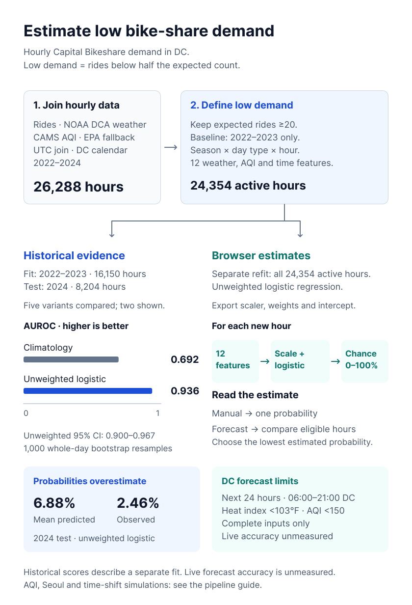
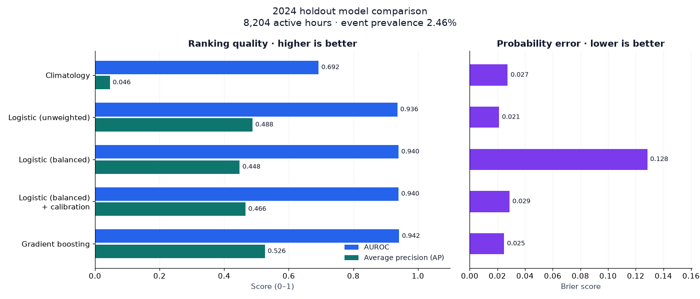
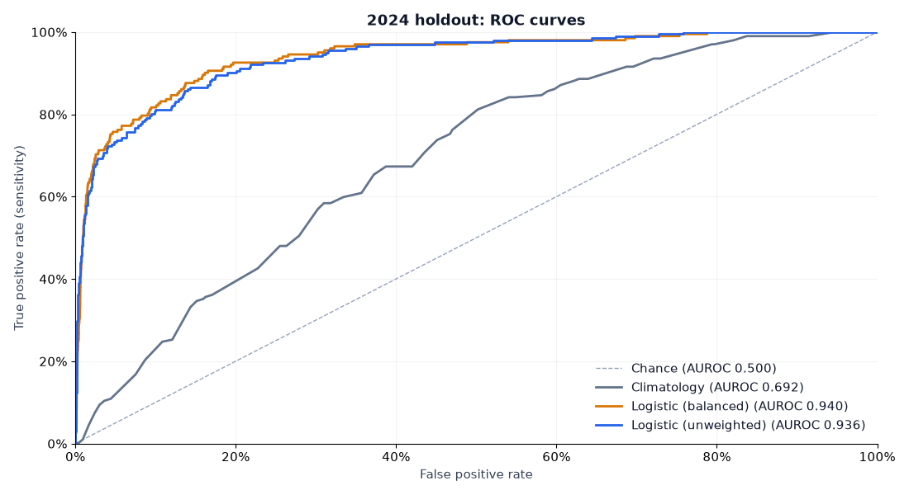
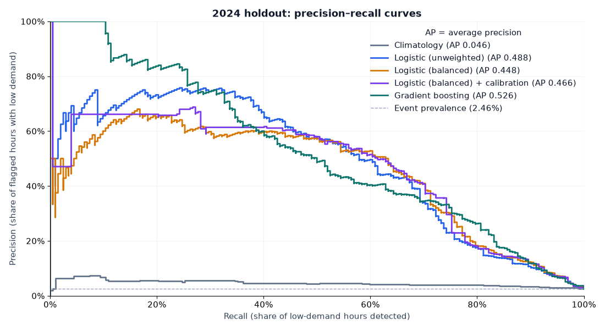
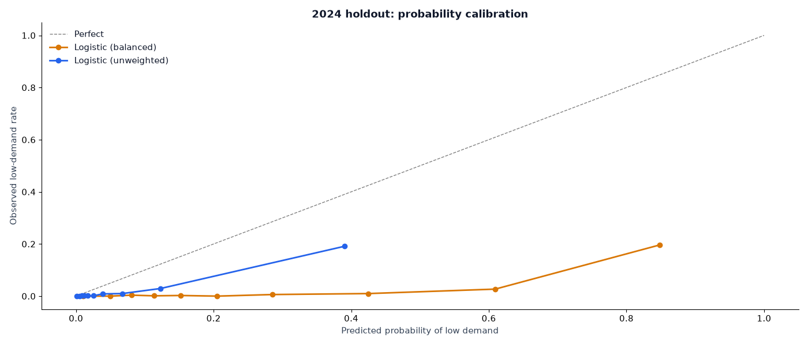
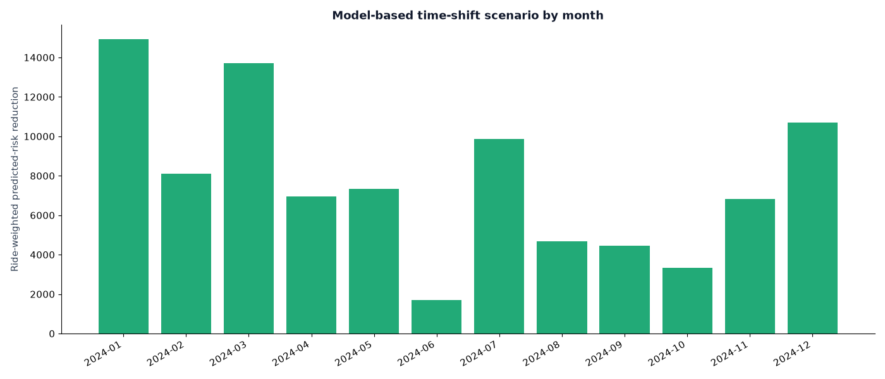

DC-area bike-share demand · 2022–2024
Charts and results
Weather, air quality and the chance that hourly rides fall below half their expected count.
Test scores use 16,150 training hours from 2022–2023 and 8,204 test hours from 2024. The app uses a separate refit on all three years.
Project pipeline

Read the pipeline as text
-
Shared data
Join rides, NOAA weather and CAMS hourly AQI in UTC, with EPA daily AQI as fallback. The 2022–2024 panel has 26,289 DC hours; CAMS coverage is 80.3%.
Use the 2022–2023 baseline for expected rides. Keep expected counts ≥20; actual counts below half of expected mean low demand. This leaves 24,354 active hours and 12 features.
-
Historical evaluation
Train five models on 16,150 active hours in 2022–2023; test on 8,204 in 2024. Compare curves and scores. Report whole-day bootstrap intervals for the unweighted model.
Simulate same-day shifts of up to three hours using historical unweighted predictions. Recovery assumes demand transfers to the chosen hour; actual ride recovery was not measured.
-
Browser model
Refit unweighted logistic regression on all 24,354 active hours in 2022–2024. Export the fixed scaler and 12-feature coefficients. Manual conditions give one estimate.
DC forecasts compare hours with complete inputs in the next 24 hours, 06:00–21:00 DC time. Exclude heat index ≥103°F or AQI ≥150 under the study rules, then choose the lowest estimated probability.
-
Other research
Study AQI and smoke in the 2022–2024 DC records. These observational associations do not establish causality.
Fit a separate 10-feature model on Seoul data. Within each season, train on the earliest 75% of functioning dates and test on the latest 25%, keeping whole dates together.
The historical unweighted model overestimates probabilities. Live forecast accuracy and actual ride recovery remain unmeasured. Pipeline methods.
Model evaluation
These charts use the historical 2024 test set.




| Model | AUROC | Average precision | Brier | ECE |
|---|---|---|---|---|
| Climatology | 0.692 | 0.046 | 0.027 | 0.053 |
| Logistic (unweighted) | 0.936 | 0.488 | 0.021 | 0.044 |
| Logistic (balanced) | 0.940 | 0.448 | 0.128 | 0.253 |
| Logistic (balanced) + calibration | 0.940 | 0.466 | 0.029 | 0.064 |
| Gradient boosting | 0.942 | 0.526 | 0.025 | 0.046 |
Time-shift scenario
A shift of up to three hours produced a predicted recovery of 36.8% of modeled lost rides (95% interval 33.0%–40.9%). This assumes full transfer to the chosen hours. At an assumed 50% transfer efficiency, recovery is 18.4%.

More charts and data


This is an aggregate demand model. Individual activity and health outcomes were not measured. Coarse AQI data, daily fallback and observational confounding limit interpretation.